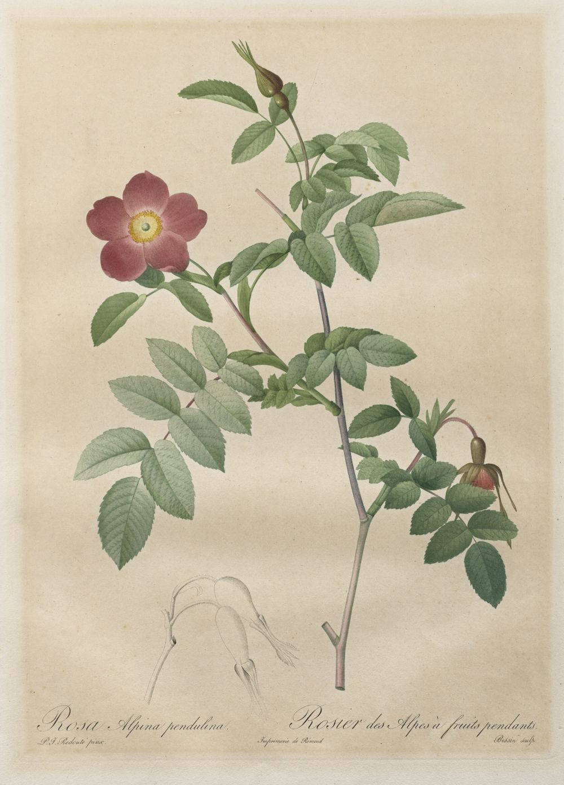
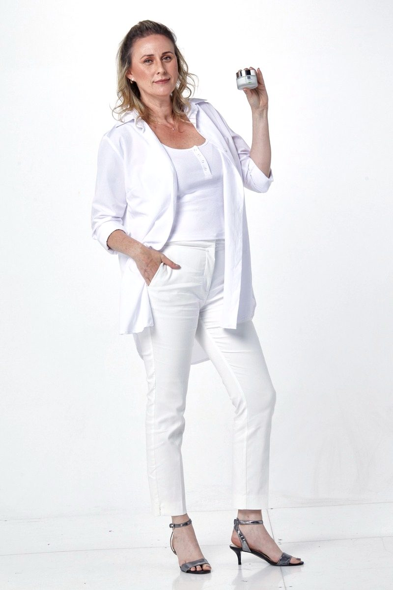
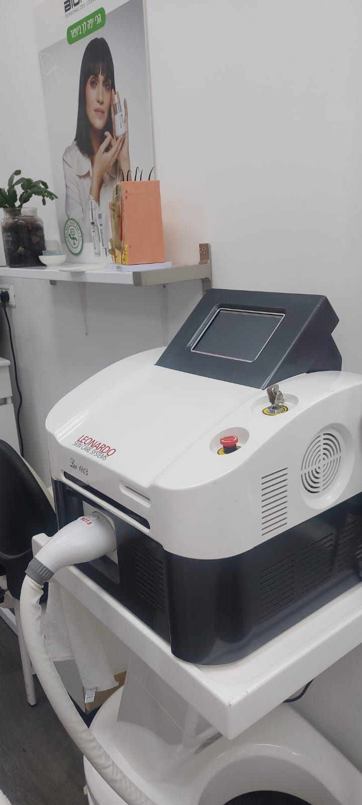
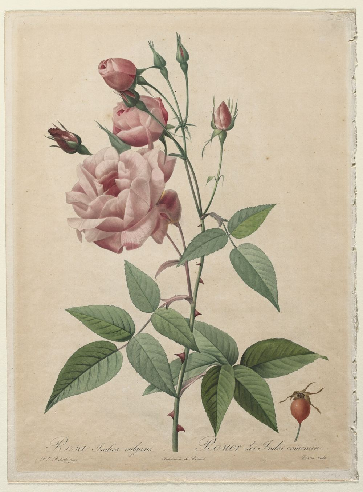
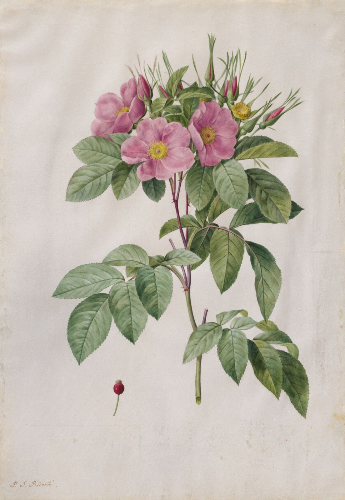
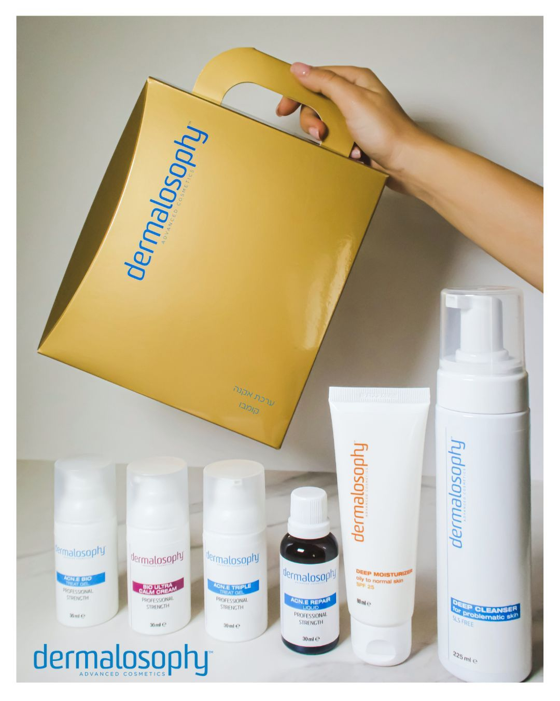

טיפולי פניםFacials
טיפוח לעור הפנים, עם מוצרים מקצועיים.Facial skin care with professional products.
“מוצרים ברמה גבוהה, יחס אישי וחם”
“High-level products, a warm personal touch”
קונספט לדוגמה שנבנה עבור איה אקרמן קוסמטיקה מתקדמת · זה אינו האתר הרשמי של העסקA sample concept built for Aya Akerman Advanced Cosmetics · This is not the business’s official website

טיפולי פנים, אקסוזומים ופדיקור, ברחוב בנימין 17 בקריית ביאליק.Facials, exosome treatments and pedicure, at 17 Binyamin St, Kiryat Bialik.
לחצו על פנינה לפרטים.Tap a pearl for details.

טיפוח לעור הפנים, עם מוצרים מקצועיים.Facial skin care with professional products.
“מוצרים ברמה גבוהה, יחס אישי וחם”
“High-level products, a warm personal touch”

טיפולים במכשיר Leonardo שבחדר הטיפולים.Treatments with the Leonardo device in her room.
המכשיר בתמונה מתוך תמונות העסק בגוגלThe device, in a photo from the business’s Google listing

טיפול אקסוזומים לעור הפנים.Exosome treatment for the face.
“כרגע בטיפול אקסוזומים והתוצאות מדהימות”
“I’m currently having exosome treatments and the results are amazing”

פדיקור מקצועי ומפנק.A professional, pampering pedicure.
“איה, פדיקוריסטית מקצועית. נותנת שרות סבלני מכל הלב.”
“Aya, a professional pedicurist. She gives patient service with all her heart.”

המוצרים שאיה עובדת איתם.The products Aya works with.
“מוצרים נהדרים מהטובים ביותר בשוק הקוסמטיקה”
“Wonderful products, among the best on the cosmetics market”
“כל ביקור חוויה מעבר לטיפול. איה בעלת ידע ומסבירה בסבלנות על כל טיפול ויוצרת אווירה רגועה ובטוחה.”
“Every visit is an experience beyond the treatment. Aya is knowledgeable, patiently explains every treatment and creates a calm, safe atmosphere.”
חדר הטיפולים של איה, ברחוב בנימין בקריית ביאליק.Aya’s treatment room, on Binyamin St in Kiryat Bialik.
מתוך תמונות העסק בגוגלFrom the business’s Google photos
קוסמטיקאית ברמה אדירה! עם מוצרים נהדרים מהטובים ביותר בשוק הקוסמטיקה… איה אקרמן קוסמטיקאית מיקצוענית ומוכשרת שעושה גם פדיקור מקצועי ומפנק. אני מגיעה אליה כבר מעל 12 שנים מחיפה לקריות.
A cosmetician of the highest level, with wonderful products, among the best on the market… Aya Akerman is a skilled professional who also does a professional, pampering pedicure. I’ve been coming to her for over 12 years, from Haifa to the Krayot.
רוצה להמליץ בחום על איה! כל ביקור אצלה הוא חוויה – היא מקצועית שאין כמותה, אכפתית ועם יחס חם ונעים. מעבר לכך, איה היא גם אשת שיחה מדהימה!
I warmly recommend Aya! Every visit to her is an experience: she is professional like no one else, caring, warm and pleasant. Beyond that, Aya is also a wonderful person to talk to!
איה קוסמטיקאית מקצועית ביותר, מגיעה אליה במיוחד מהגליל המערבי. מוצרים ברמה גבוהה, יחס אישי וחם… כרגע בטיפול אקסוזומים והתוצאות מדהימות.
Aya is an extremely professional cosmetician; I come to her specially from the Western Galilee. High-level products, a warm personal touch… I’m currently having exosome treatments and the results are amazing.
איה קוסמטיקאית מיקצוענית ומדהימה וברמה גבוהה… כל ביקור חוויה מעבר לטיפול. איה בעלת ידע ומסבירה בסבלנות על כל תהליך הטיפול ומשרה אווירה רגועה ובטוחה.
Aya is a professional, amazing, high-level cosmetician… Every visit is an experience beyond the treatment. She is knowledgeable, patiently explains the whole process and brings a calm, safe atmosphere.
איה, פדיקוריסטית מקצועית. נותנת שרות סבלני מכל הלב. מומלץ
Aya, a professional pedicurist. She gives patient service with all her heart. Recommended.
בוחרים טיפול ויום, וההודעה נכתבת לבד.Pick a treatment and a day, and the message writes itself.
ברחוב בנימין 17, קריית ביאליק.At 17 Binyamin St, Kiryat Bialik.
ראשון עד חמישי 9:00–19:00, שישי 9:00–14:00. בשבת סגור.Sunday to Thursday 9:00–19:00, Friday 9:00–14:00. Closed on Saturday.
כן. לצד טיפולי הפנים, איה עושה גם פדיקור.Yes. Alongside facials, Aya also does pedicure.
בהודעת וואטסאפ או בטלפון, 052-696-6409.By WhatsApp message or by phone, 052-696-6409.